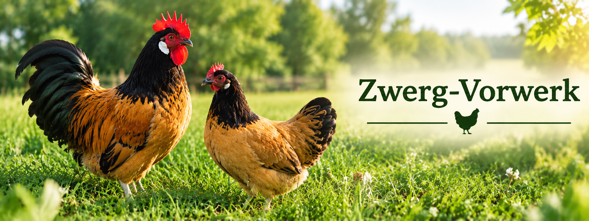

Ein lebhaftes Zwerghuhn mit auffälliger gold-schwarzer Färbung

Das Zwerg-Vorwerk ist die kleinere Form des Vorwerkhuhns und gehört zu den beliebten deutschen Zwerghuhnrassen. Es zeichnet sich durch seine goldgelbe Körperfarbe sowie den schwarzen Hals und Schwanz aus.
Die Rasse ist robust und lebhaft und eignet sich sowohl für die Hobbyhaltung als auch für die Zucht.
| Merkmal | Beschreibung |
|---|---|
| Herkunft | Deutschland |
| Farbe | Goldgelb mit schwarzem Hals und Schwanz |
| Besonderheit | Auffällige Farbkombination |
| Charakter | Lebhaft und aufmerksam |
| Eier pro Jahr | ca. 120 |
| Typ | Zwerghuhn |
An den Zwerg-Vorwerken gefällt mir besonders ihre schöne Farbkombination. Das goldgelbe Gefieder bildet einen starken Kontrast zum schwarzen Hals und Schwanz.
Außerdem sind die Tiere aktiv und immer interessant zu beobachten.
CSS steht für Cascading Style Sheets und wird verwendet, um das Aussehen einer Webseite zu gestalten. Während HTML die Struktur festlegt, bestimmt CSS Farben, Schriftarten, Abstände und das Layout einer Webseite.
Mit CSS können Farben für Hintergründe, Texte und andere Elemente festgelegt werden. Dadurch erhält eine Webseite ein einheitliches Erscheinungsbild.
body {
background-color: #F5F5DC;
color: #333333;
}In diesem Beispiel erhält die Webseite einen hellen Hintergrund und eine dunkle Schriftfarbe.
Auch die Darstellung von Texten wird durch CSS gesteuert. Dabei können unter anderem Schriftart, Schriftgröße und Schriftfarbe festgelegt werden.
h1 {
font-family: Arial;
color: #4F7942;
}Durch eine einheitliche Typografie wirkt eine Webseite übersichtlicher und besser lesbar.
CSS ermöglicht die genaue Gestaltung und Anordnung von Elementen. Mit Abständen und Größenangaben können Inhalte übersichtlich angeordnet werden.
.container {
margin-top: 20px;
padding: 10px;
}Abstände verhindern, dass Inhalte zu dicht beieinander stehen, und verbessern dadurch die Benutzerfreundlichkeit.
Auf dieser Webseite wird zusätzlich das Framework Bootstrap verwendet. Bootstrap enthält zahlreiche vorgefertigte Klassen für Layouts, Navigationen, Tabellen und andere Komponenten.
Ein großer Vorteil ist die Unterstützung von Responsive Design. Dadurch passt sich die Webseite automatisch an Smartphones, Tablets und Desktop-Computer an.
CSS ist ein zentraler Bestandteil der modernen Webentwicklung. Gemeinsam mit HTML ermöglicht CSS die Gestaltung professioneller Webseiten.
Farben, Schriftarten, Layouts und Responsive Design tragen wesentlich zur Benutzerfreundlichkeit und zum Erscheinungsbild einer Webseite bei.
© Atina Rodler 21.04.2026